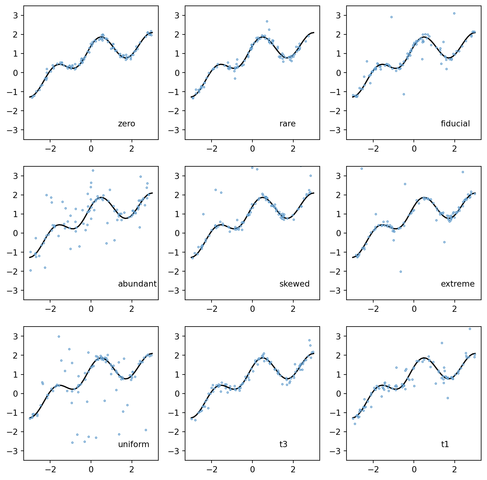
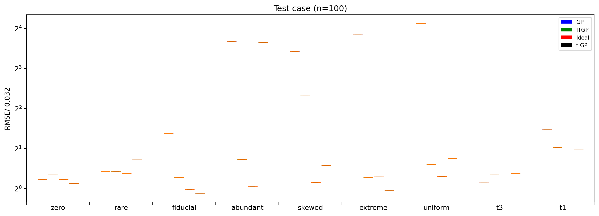

import base64
import io
import os
from typing import Annotated, Dict, Literal, Optional
import botorch
import dill
import gpytorch
import numpy as np
import pandas as pd
import torch
from botorch.fit import fit_gpytorch_mll
from botorch.models.transforms.outcome import Standardize
from gpytorch.likelihoods import StudentTLikelihood
from gpytorch.mlls import VariationalELBO
from matplotlib import cm
from matplotlib import pyplot as plt
from pydantic import Extra, Field
from scipy.stats import norm, t, uniform
import bofire.kernels.api as kernels
import bofire.outlier_detection.api as outlier_mapper
import bofire.priors.api as priors
import bofire.surrogates.api as surrogate_mapper
from bofire.data_models.domain.api import Inputs, Outputs
from bofire.data_models.enum import OutputFilteringEnum
from bofire.data_models.features.api import ContinuousInput, ContinuousOutput
from bofire.data_models.kernels.api import (
AnyKernel,
MaternKernel,
RBFKernel,
ScaleKernel,
)
from bofire.data_models.outlier_detection.api import IterativeTrimming
from bofire.data_models.priors.api import (
THREESIX_LENGTHSCALE_PRIOR,
THREESIX_NOISE_PRIOR,
THREESIX_SCALE_PRIOR,
AnyPrior,
)
from bofire.data_models.surrogates.api import ScalerEnum, SingleTaskGPSurrogate
from bofire.data_models.surrogates.botorch import BotorchSurrogate as BotorchSurrogateDM
from bofire.surrogates.botorch import BotorchSurrogate
from bofire.surrogates.trainable import TrainableSurrogate
from bofire.surrogates.utils import get_scaler
from bofire.utils.torch_tools import tkwargs
SMOKE_TEST = os.environ.get("SMOKE_TEST")Outlier detection benchmark
Tutorial for benchmarking Robust Iterative trimming GP that detects outliers. It is benchmarked against standard GP and Student-t GP. Here, we compare on neal dataset. The idea is adapted from https://www.sciencedirect.com/science/article/pii/S2213133721000378?via%3Dihub. Their code is available at https://github.com/syrte/robustgp/
Imports
Class for Student-t GP
class DataModel(BotorchSurrogateDM):
class Config:
arbitrary_types_allowed = True
extra = Extra.allow
type: Literal["SingleTaskVariationalGPSurrogate"] = (
"SingleTaskVariationalGPSurrogate"
)
num_outputs: Annotated[int, Field(ge=1)] = 1
kernel: AnyKernel = Field(
default_factory=lambda: ScaleKernel(
base_kernel=MaternKernel(
ard=True,
nu=2.5,
lengthscale_prior=THREESIX_LENGTHSCALE_PRIOR(),
),
outputscale_prior=THREESIX_SCALE_PRIOR(),
)
)
noise_prior: AnyPrior = Field(default_factory=lambda: THREESIX_NOISE_PRIOR())
scaler: ScalerEnum = ScalerEnum.NORMALIZE
@classmethod
def is_output_implemented(cls, my_type) -> bool:
"""Abstract method to check output type for surrogate models
Args:
my_type: continuous or categorical output
Returns:
bool: True if the output type is valid for the surrogate chosen, False otherwise
"""
return isinstance(my_type, type(ContinuousOutput))
class SingleTaskVariationalGPSurrogate(BotorchSurrogate, TrainableSurrogate):
def __init__(
self,
data_model: DataModel,
**kwargs,
):
self.kernel = data_model.kernel
self.scaler = data_model.scaler
self.noise_prior = data_model.noise_prior
self.num_outputs = data_model.num_outputs
super().__init__(data_model=data_model, **kwargs)
model: Optional[botorch.models.SingleTaskVariationalGP] = None
_output_filtering: OutputFilteringEnum = OutputFilteringEnum.ALL
training_specs: Dict = {}
def _fit(self, X: pd.DataFrame, Y: pd.DataFrame):
scaler = get_scaler(self.inputs, self.input_preprocessing_specs, self.scaler, X)
transformed_X = self.inputs.transform(X, self.input_preprocessing_specs)
tX, tY = (
torch.from_numpy(transformed_X.values).to(**tkwargs),
torch.from_numpy(Y.values).to(**tkwargs),
)
self.output_transform = Standardize(m=tY.shape[-1])
tY, _ = self.output_transform(tY)
self.model = botorch.models.SingleTaskVariationalGP( # type: ignore
train_X=tX,
train_Y=tY,
likelihood=StudentTLikelihood(noise_prior=priors.map(self.noise_prior)),
num_outputs=self.num_outputs,
learn_inducing_points=False,
inducing_points=tX,
covar_module=kernels.map(
self.kernel,
batch_shape=torch.Size(),
active_dims=list(range(tX.shape[1])),
features_to_idx_mapper=lambda feats: self.inputs.get_feature_indices(
self.input_preprocessing_specs, feats
),
),
# outcome_transform=Standardize(m=tY.shape[-1]),
input_transform=scaler,
)
# self.model.likelihood.noise_covar.noise_prior = priors.map(self.noise_prior) # type: ignore
mll = VariationalELBO(
self.model.likelihood,
self.model.model,
num_data=tX.shape[-2],
)
fit_gpytorch_mll(mll, options=self.training_specs, max_attempts=10)
def _predict(self, transformed_X: pd.DataFrame):
# transform to tensor
X = torch.from_numpy(transformed_X.values).to(**tkwargs)
self.model.model.eval() # type: ignore
self.model.likelihood.eval() # type: ignore
with torch.no_grad() and gpytorch.settings.num_likelihood_samples(128):
preds = (
self.model.posterior(X=X, observation_noise=True)
.mean.mean(dim=0)
.cpu()
.detach()
) # type: ignore
variance = (
self.model.posterior(X=X, observation_noise=True)
.variance.mean(dim=0)
.cpu()
.detach()
) # type: ignore
preds, variance = self.output_transform.untransform(preds, variance)
preds = preds.numpy()
stds = np.sqrt(variance.numpy()) # type: ignore
return preds, stds
def _dumps(self) -> str:
"""Dumps the actual model to a string via pickle as this is not directly json serializable."""
buffer = io.BytesIO()
torch.save(
{"model": self.model, "output_transform": self.output_transform},
buffer,
pickle_module=dill,
)
return base64.b64encode(buffer.getvalue()).decode()
def loads(self, data: str):
"""Loads the actual model from a base64 encoded pickle bytes object and writes it to the `model` attribute."""
buffer = io.BytesIO(base64.b64decode(data.encode()))
path = torch.load(buffer, pickle_module=dill)
self.model = path["model"]
self.output_transform = path["output_transform"]/tmp/ipykernel_4639/1654293840.py:4: PydanticDeprecatedSince20:
`pydantic.config.Extra` is deprecated, use literal values instead (e.g. `extra='allow'`). Deprecated in Pydantic V2.0 to be removed in V3.0. See Pydantic V2 Migration Guide at https://errors.pydantic.dev/2.12/migration/
/tmp/ipykernel_4639/1654293840.py:1: PydanticDeprecatedSince20:
Support for class-based `config` is deprecated, use ConfigDict instead. Deprecated in Pydantic V2.0 to be removed in V3.0. See Pydantic V2 Migration Guide at https://errors.pydantic.dev/2.12/migration/
set up inputs, outputs and surrogate models for different GPs
inputs = Inputs(
features=[
ContinuousInput(
key=f"x_{1}",
bounds=(-3, 3),
),
],
)
outputs = Outputs(features=[ContinuousOutput(key="y")])kernel = ScaleKernel(base_kernel=RBFKernel(ard=True))
scaler = ScalerEnum.NORMALIZEmodel_GP = SingleTaskGPSurrogate(
inputs=inputs,
outputs=outputs,
kernel=kernel,
scaler=scaler,
)
model_GP = surrogate_mapper.map(model_GP)
model_tP = DataModel(inputs=inputs, outputs=outputs, kernel=kernel, scaler=scaler)
model_tP = SingleTaskVariationalGPSurrogate(data_model=model_tP)
model_ideal_GP = SingleTaskGPSurrogate(
inputs=inputs,
outputs=outputs,
kernel=kernel,
scaler=scaler,
)
model_ideal_GP = surrogate_mapper.map(model_ideal_GP)
model_ITGP = SingleTaskGPSurrogate(
inputs=inputs,
outputs=outputs,
kernel=kernel,
scaler=scaler,
)
model_ITGP_final = SingleTaskGPSurrogate(
inputs=inputs,
outputs=outputs,
kernel=kernel,
scaler=scaler,
)
model_ITGP_final = surrogate_mapper.map(model_ITGP_final)ITGP_detector = IterativeTrimming(base_gp=model_ITGP)
ITGP_detector = outlier_mapper.map(ITGP_detector)Neal dataset
We create neal dataset for benchmarking from the paper https://www.sciencedirect.com/science/article/pii/S2213133721000378?via%3Dihub.
def neal_func(x):
return 0.3 + 0.4 * x + 0.5 * np.sin(2.7 * x) + 1.1 / (1 + x**2)
def neal_dataset(
n=100,
s1=0.1,
s2=1,
m2=0,
f2=0.15,
t2="n",
sampling="rand",
**args_extra,
):
n2 = int(n * f2)
n1 = n - n2
if sampling == "randn":
x = np.random.randn(n)
elif sampling == "rand":
x = np.random.rand(n) * 6 - 3
elif sampling == "grid":
x = np.linspace(-3, 3, n)
else:
raise ValueError
y_tr = neal_func(x)
y_ob = np.zeros(n)
label = np.zeros(n, dtype=int)
ix1 = np.zeros(n, dtype=bool)
ix1[np.random.choice(n, n1, replace=False)] = True
ix2 = ~ix1
y_ob[ix1] = y_tr[ix1] + norm(0, s1).rvs(n1)
if t2 == "n":
y_ob[ix2] = y_tr[ix2] + norm(m2, s2).rvs(n2)
elif t2 == "t1":
y_ob[ix2] = y_tr[ix2] + t(1, m2, s2).rvs(n2)
elif t2 == "t3":
y_ob[ix2] = y_tr[ix2] + t(3, m2, s2).rvs(n2)
elif t2 == "u":
y_ob[ix2] = uniform(m2, s2).rvs(n2)
else:
raise ValueError
label[ix1] = 0
label[ix2] = 1
dic = {"x": x, "y_ob": y_ob, "y_tr": y_tr, "label": label}
return dic
# np.random.seed(5)
sample = 10 if not SMOKE_TEST else 1
n = 100Adding outliers
We use 9 outlier noise conditions to test our models
args_list = [
("zero", {"n": n, "s1": 0.1, "s2": 1.0, "m2": 0, "f2": 0, "t2": "n"}),
("rare", {"n": n, "s1": 0.1, "s2": 1.0, "m2": 0, "f2": 0.05, "t2": "n"}),
("fiducial", {"n": n, "s1": 0.1, "s2": 1.0, "m2": 0, "f2": 0.15, "t2": "n"}),
("abundant", {"n": n, "s1": 0.1, "s2": 1.0, "m2": 0, "f2": 0.45, "t2": "n"}),
("skewed", {"n": n, "s1": 0.1, "s2": 1.0, "m2": 2, "f2": 0.15, "t2": "n"}),
("extreme", {"n": n, "s1": 0.1, "s2": 5.0, "m2": 0, "f2": 0.15, "t2": "n"}),
("uniform", {"n": n, "s1": 0.1, "s2": 6.0, "m2": -3, "f2": 0.3, "t2": "u"}),
("t3", {"n": n, "s1": 0.1, "s2": 0.1, "m2": 0, "f2": 1, "t2": "t3"}),
("t1", {"n": n, "s1": 0.1, "s2": 0.1, "m2": 0, "f2": 1, "t2": "t1"}),
]fig, ax = plt.subplots(3, 3, figsize=(10, 10))
k = 0
for i in range(3):
for j in range(3):
d = neal_dataset(**args_list[k][1])
ax[i, j].scatter(
d["x"],
d["y_ob"],
facecolor=cm.tab20.colors[1],
edgecolor=cm.tab20.colors[0],
vmin=-0.5,
vmax=1.5,
s=5,
lw=0.5,
alpha=0.8,
)
x = np.linspace(-3, 3, 51)
ax[i, j].plot(x, neal_func(x), "k-", lw=1.5, zorder=-1)
ax[i, j].set_ylim(-3.5, 3.5)
ax[i, j].text(0.7, 0.1, args_list[k][0], transform=ax[i, j].transAxes)
k = k + 1
fig.show()/tmp/ipykernel_4639/703123806.py:6: UserWarning:
No data for colormapping provided via 'c'. Parameters 'vmin', 'vmax' will be ignored

Run fitting
We use standard GP for dataset without outliers, standard GP for outliers, Iterative gp (ITGP) and student-t GP
def loss_RMSE(y, y0):
return np.sqrt(np.mean((y - y0) ** 2))
cols = [
"zero",
"rare",
"fiducial",
"abundant",
"skewed",
"extreme",
"uniform",
"t3",
"t1",
]
rmse_GP, rmse_ideal, rmse_ITGP, rmse_tP = (
pd.DataFrame(columns=cols),
pd.DataFrame(columns=cols),
pd.DataFrame(columns=cols),
pd.DataFrame(columns=cols),
)
test_data = neal_dataset(n=1000, s1=0, s2=0, m2=0, f2=0, sampling="grid", mode="test")
test_experiments = pd.DataFrame()
test_experiments["x_1"] = test_data["x"]
test_experiments["y"] = test_data["y_tr"]
for j in range(len(cols)):
GP, ideal_GP, ITGP, tP = [], [], [], []
for _ in range(sample):
train_data = neal_dataset(**args_list[j][1])
experiments = pd.DataFrame()
experiments["x_1"] = train_data["x"]
experiments["y"] = train_data["y_ob"]
experiments["valid_y"] = 1
ideal_experiments = experiments.copy()
ideal_experiments.loc[train_data["label"] == 1, "valid_y"] = 0
experiments_trimmed = ITGP_detector.detect(experiments)
model_GP.fit(experiments)
model_tP.fit(experiments)
GP_test = model_GP.predict(test_experiments)
tP_test = model_tP.predict(test_experiments)
if cols[j] != "t3" and cols[j] != "t1":
model_ideal_GP.fit(ideal_experiments)
ideal_GP_test = model_ideal_GP.predict(test_experiments)
ideal_GP.append(loss_RMSE(ideal_GP_test["y_pred"], test_experiments["y"]))
else:
ideal_GP.append(np.nan)
model_ITGP_final.fit(experiments_trimmed)
ITGP_test = model_ITGP_final.predict(test_experiments)
GP.append(loss_RMSE(GP_test["y_pred"], test_experiments["y"]))
ITGP.append(loss_RMSE(ITGP_test["y_pred"], test_experiments["y"]))
tP.append(loss_RMSE(tP_test["y_pred"], test_experiments["y"]))
rmse_GP[cols[j]] = np.array(GP) / 0.032
rmse_ideal[cols[j]] = np.array(ideal_GP) / 0.032
rmse_ITGP[cols[j]] = np.array(ITGP) / 0.032
rmse_tP[cols[j]] = np.array(tP) / 0.032/opt/hostedtoolcache/Python/3.12.12/x64/lib/python3.12/site-packages/bofire/surrogates/trainable.py:42: UserInputWarning:
Using an input transform with `SingleTaskVariationalGP`. If this model is trained in minibatches, a input transform with learnable parameters would update its parameters for each minibatch, which is undesirable. If you do intend to train in minibatches, we recommend you not use a input transform and instead pre-transform your whole data set before fitting the model.
/opt/hostedtoolcache/Python/3.12.12/x64/lib/python3.12/site-packages/bofire/surrogates/trainable.py:42: UserInputWarning:
Using an input transform with `SingleTaskVariationalGP`. If this model is trained in minibatches, a input transform with learnable parameters would update its parameters for each minibatch, which is undesirable. If you do intend to train in minibatches, we recommend you not use a input transform and instead pre-transform your whole data set before fitting the model.
/opt/hostedtoolcache/Python/3.12.12/x64/lib/python3.12/site-packages/bofire/surrogates/trainable.py:42: UserInputWarning:
Using an input transform with `SingleTaskVariationalGP`. If this model is trained in minibatches, a input transform with learnable parameters would update its parameters for each minibatch, which is undesirable. If you do intend to train in minibatches, we recommend you not use a input transform and instead pre-transform your whole data set before fitting the model.
/opt/hostedtoolcache/Python/3.12.12/x64/lib/python3.12/site-packages/bofire/surrogates/trainable.py:42: UserInputWarning:
Using an input transform with `SingleTaskVariationalGP`. If this model is trained in minibatches, a input transform with learnable parameters would update its parameters for each minibatch, which is undesirable. If you do intend to train in minibatches, we recommend you not use a input transform and instead pre-transform your whole data set before fitting the model.
/opt/hostedtoolcache/Python/3.12.12/x64/lib/python3.12/site-packages/bofire/surrogates/trainable.py:42: UserInputWarning:
Using an input transform with `SingleTaskVariationalGP`. If this model is trained in minibatches, a input transform with learnable parameters would update its parameters for each minibatch, which is undesirable. If you do intend to train in minibatches, we recommend you not use a input transform and instead pre-transform your whole data set before fitting the model.
/opt/hostedtoolcache/Python/3.12.12/x64/lib/python3.12/site-packages/bofire/surrogates/trainable.py:42: UserInputWarning:
Using an input transform with `SingleTaskVariationalGP`. If this model is trained in minibatches, a input transform with learnable parameters would update its parameters for each minibatch, which is undesirable. If you do intend to train in minibatches, we recommend you not use a input transform and instead pre-transform your whole data set before fitting the model.
/opt/hostedtoolcache/Python/3.12.12/x64/lib/python3.12/site-packages/bofire/surrogates/trainable.py:42: UserInputWarning:
Using an input transform with `SingleTaskVariationalGP`. If this model is trained in minibatches, a input transform with learnable parameters would update its parameters for each minibatch, which is undesirable. If you do intend to train in minibatches, we recommend you not use a input transform and instead pre-transform your whole data set before fitting the model.
/opt/hostedtoolcache/Python/3.12.12/x64/lib/python3.12/site-packages/bofire/surrogates/trainable.py:42: UserInputWarning:
Using an input transform with `SingleTaskVariationalGP`. If this model is trained in minibatches, a input transform with learnable parameters would update its parameters for each minibatch, which is undesirable. If you do intend to train in minibatches, we recommend you not use a input transform and instead pre-transform your whole data set before fitting the model.
/opt/hostedtoolcache/Python/3.12.12/x64/lib/python3.12/site-packages/bofire/surrogates/trainable.py:42: UserInputWarning:
Using an input transform with `SingleTaskVariationalGP`. If this model is trained in minibatches, a input transform with learnable parameters would update its parameters for each minibatch, which is undesirable. If you do intend to train in minibatches, we recommend you not use a input transform and instead pre-transform your whole data set before fitting the model.
Performance comparison
Here we plot the performance comparison similar to fig 4 in paper https://www.sciencedirect.com/science/article/pii/S2213133721000378?via%3Dihub. ITGP performs better than other GPs
from matplotlib import ticker
from matplotlib.patches import Patch
# Define the groups
groups = ["GP", "ITGP", "Ideal", "t GP"]
datasets = [rmse_GP, rmse_ITGP, rmse_ideal, rmse_tP]
fig, ax = plt.subplots(1, 1, figsize=(15, 5))
# Set x-positions for boxes
x_pos_range = np.arange(len(datasets)) / (len(datasets) - 1)
x_pos = (x_pos_range * 0.5) + 0.75
# Plot
colours = ["blue", "green", "red", "black"]
for i, data in enumerate(datasets):
bp = plt.boxplot(
np.array(data),
sym="", # whis=[0, 100],
widths=0.6 / len(datasets),
tick_labels=list(datasets[0]),
patch_artist=True,
positions=[x_pos[i] + j * 1 for j in range(len(data.T))],
)
k = i % len(colours)
for box in bp["boxes"]:
box.set(facecolor=colours[k])
for element in ["boxes", "fliers", "means"]:
plt.setp(bp[element], color=colours[k])
# Titles
plt.title("Test case (n=100)")
plt.ylabel("RMSE/ 0.032")
# Axis ticks and labels
plt.xticks(np.arange(len(list(datasets[0]))) + 1)
plt.gca().xaxis.set_minor_locator(
ticker.FixedLocator(np.array(range(len(list(datasets[0])) + 1)) + 0.5),
)
plt.gca().tick_params(axis="x", which="minor", length=4)
plt.gca().tick_params(axis="x", which="major", length=0)
# Change the limits of the x-axis
plt.xlim([0.5, len(list(datasets[0])) + 0.5])
# plt.ylim(0.25,16)
plt.yscale("log", base=2)
legend_elements = []
for i in range(len(datasets)):
j = i % len(groups)
k = i % len(colours)
legend_elements.append(Patch(facecolor=colours[k], label=groups[j]))
plt.legend(handles=legend_elements, fontsize=8)
plt.show()